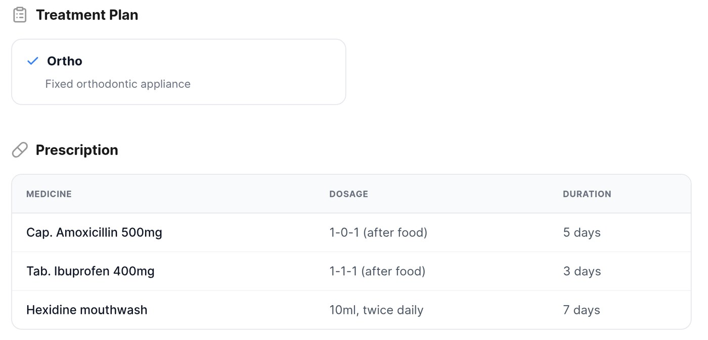
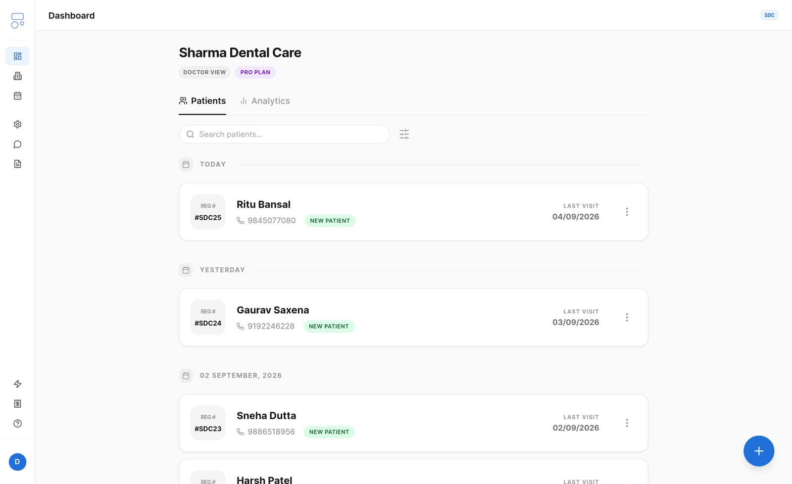
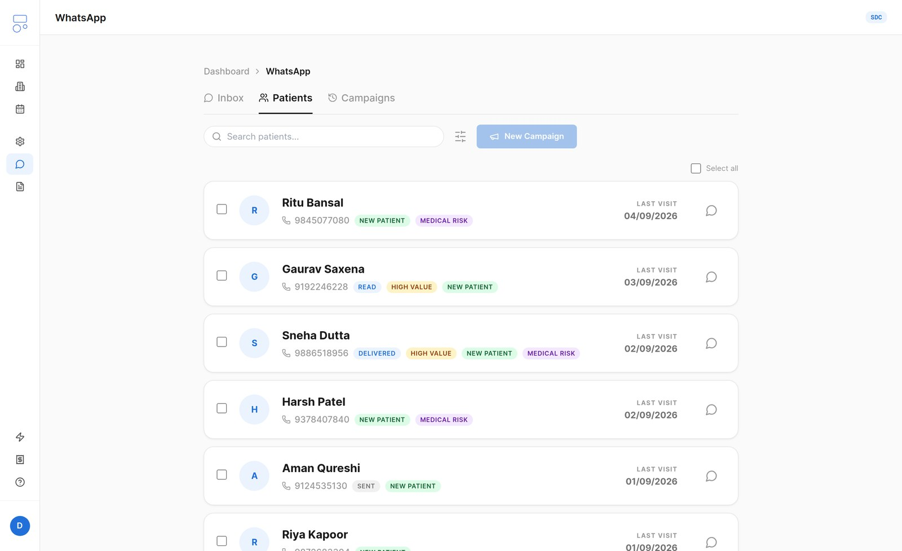

Clinics were renting their own patient relationships back.
To send a simple prescription or In dentistry, a recall is a scheduled prompt bringing a patient back for a routine check-up or follow-up after a set interval — typically 7, 90 or 180 days. reminder on WhatsApp, an Indian clinic needs API access plus a developer to maintain it — ₹6,000–15,000 every month. Most clinics either pay it, or don't message at all.
Meanwhile recalls live in spreadsheets, reminders never go out, and patients quietly never come back. A filled chair today hides an empty one next quarter.
Overspending on WhatsApp infrastructure — or skipping patient communication entirely.
Fragmented communications and inconsistent branding across branches, with no unified view.
The practice runs itself.
One dashboard for records, messaging, invoicing and analytics — set up in 5 minutes, no developer. Hindi and English templates, data stored in India, India's Digital Personal Data Protection Act, 2023 — the law governing how personal data, including patient records, must be collected, stored and processed.-compliant.
As the patient walks out, a clinic-branded WhatsApp prescription goes out — logo, doctor's signature, treatment notes.
Smart follow-up campaigns with the patient's name and a booking link — the moments clinics always miss by hand.
Records, X-rays, GST invoicing, UPI payment links, Practo / Razorpay / Google Calendar integrations.



Receptionists see appointments, doctors see history, owners see everything — one product, three honest views.
Revenue by branch, treatment and time period. Managers see their clinic; owners see the network.
A clinic paying ₹399 cannot be sent ₹400 of messages.
Every message Dentomate sends costs me money, and not every message costs the same. A WhatsApp's own billing category for a message the patient's own visit asked for — a prescription, a receipt, an appointment reminder. Anything promotional bills as marketing instead, at several times the rate. message — a prescription, a receipt, a reminder the patient's own visit asked for — costs about ₹0.13. A marketing message costs about ₹0.88. Seven times more, for the same tap.
That ratio designed the plans. The free tier could not be fewer features; it had to be less of the expensive thing. So paying does not unlock buttons — it raises a ceiling on recall campaigns, the single place the ₹0.88 rate applies. Everything a clinic does for the patient in the chair is free at every tier, because it costs me almost nothing to give.
It sells worse than three columns of ticks and crosses, and I know it — clinics ask what ₹399 buys and the honest answer is a ceiling, not a list. I kept it because the alternative was charging for something that was free to hand over.
200+ clinics, and counting.